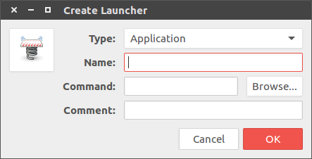
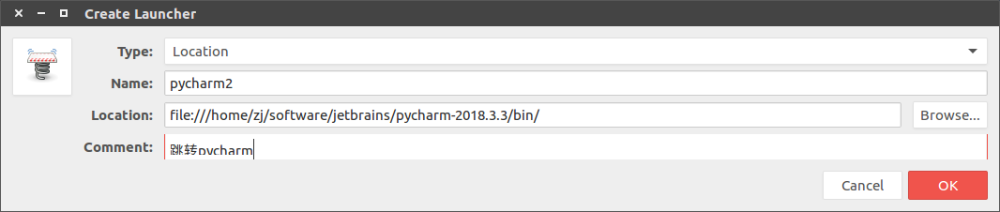

[Ubuntu 16.04]启动器制作¶
想要在Ubuntu桌面设置一个类似Windows的快捷方式
参考：
How to create a desktop shortcut [duplicate]
How can I create launchers on my desktop?
使用已有启动器¶
搜索栏中的快捷方式无法通过鼠标拖动，可以在/usr/share/applications或~/.local/share/applications目录下找到，复制到桌面即可使用
自定义¶
可以通过工具gnome-desktop-item-edit实现
sudo apt-get install --no-install-recommends gnome-panel
执行新建启动器命令
gnome-desktop-item-edit --create-new ~/Desktop

类型默认为Application，输入名字，命令和描述即可新建
将该文件放置到/usr/share/applications或~/.local/share/applications目录下，即可在搜索栏中找到
desktop文件解析¶
启动器是一个.desktop文件，里面内容如下：
#!/usr/bin/env xdg-open
[Desktop Entry]
Version=1.0
Type=Application
Terminal=false
Icon[en_US]=gnome-panel-launcher
Name[en_US]=pycharm
Exec=/home/zj/software/jetbrains/pycharm-2018.3.3/bin/pycharm.sh
Comment[en_US]=启动pycharm
Name=pycharm
Comment=启动pycharm
Icon=gnome-panel-launcher
- 参数
Type=Application表示该desktop文件用于启动一个应用 - 参数
Exec表示执行命令 - 参数
Icon用于显示的图标 - 参数
Name用于启动器名称
Note: 可以设置不同语言环境的名字和图标
examples.desktop解析¶
Ubuntu默认在用户目录下有一个examples.desktop启动器，内容如下：
[Desktop Entry]
Version=1.0
Type=Link
Name=Examples
...
...
Name[en_AU]=Examples
Name[en_CA]=Examples
Name[en_GB]=Examples
...
...
Name[zh_CN]=示例
Name[zh_HK]=範例
Name[zh_TW]=範例
Comment=Example content for Ubuntu
...
...
Comment[en_AU]=Example content for Ubuntu
Comment[en_CA]=Example content for Ubuntu
Comment[en_GB]=Example content for Ubuntu
...
...
Comment[zh_CN]=Ubuntu 示例内容
Comment[zh_HK]=Ubuntu 的範例內容
Comment[zh_TW]=Ubuntu 的範例內容
URL=file:///usr/share/example-content/
Icon=folder
X-Ubuntu-Gettext-Domain=example-content
双击该文件是跳转到目录/usr/share/example-content/，其Type是Link，跳转到参数URL所指定的地址
执行跳转功能的启动器也可通过gnome-desktop-item-edit实现，将类型修改为Location即可

#!/usr/bin/env xdg-open
[Desktop Entry]
Version=1.0
Type=Link
Icon[en_US]=gnome-panel-launcher
Name[en_US]=pycharm2
URL=file:///home/zj/software/jetbrains/pycharm-2018.3.3/bin/
Comment[en_US]=跳转pycharm
Name=pycharm2
Comment=跳转pycharm
Icon=gnome-panel-launcher